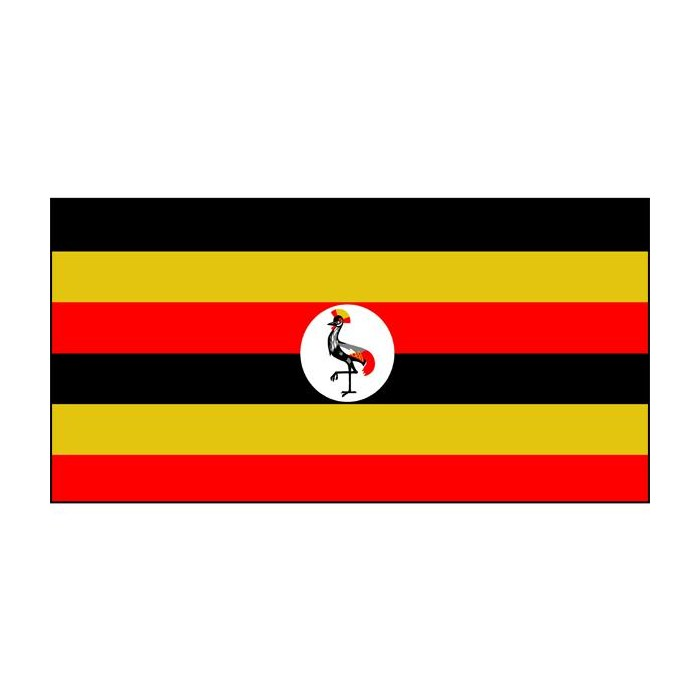

Uganda, officially the Republic of Uganda, is a landlocked country in East Africa. It is bordered to the east by Kenya, to the north by South Sudan, ...
In October 2018, Uganda took part in Commonwealth Election Professionals (CEP) Initiative training. Participants exchanged experience and best practice on running fair and trusted elections.
The secteriat helped uganda strengthen its Systems and approaches to tackle violent and exterismist views.